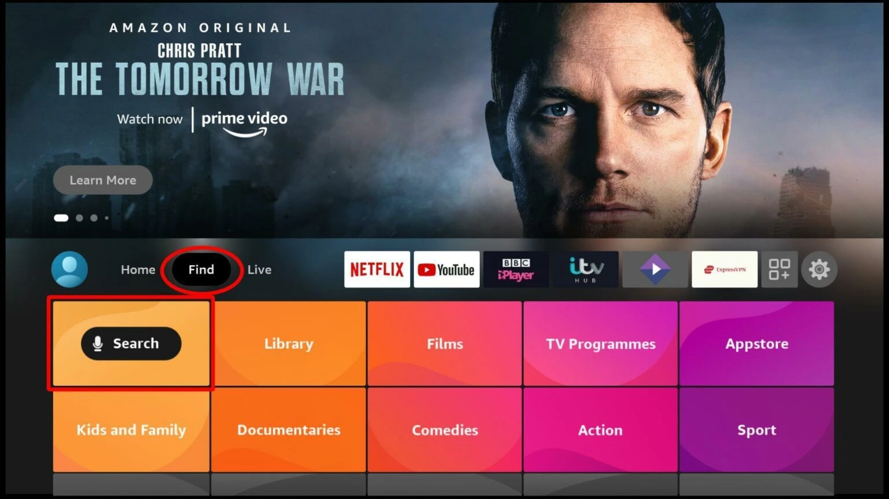
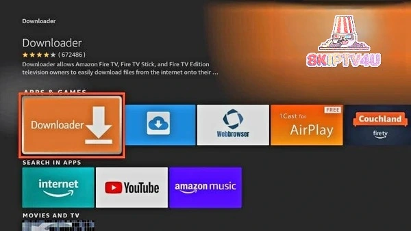
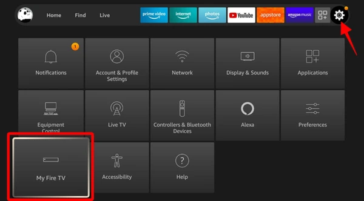
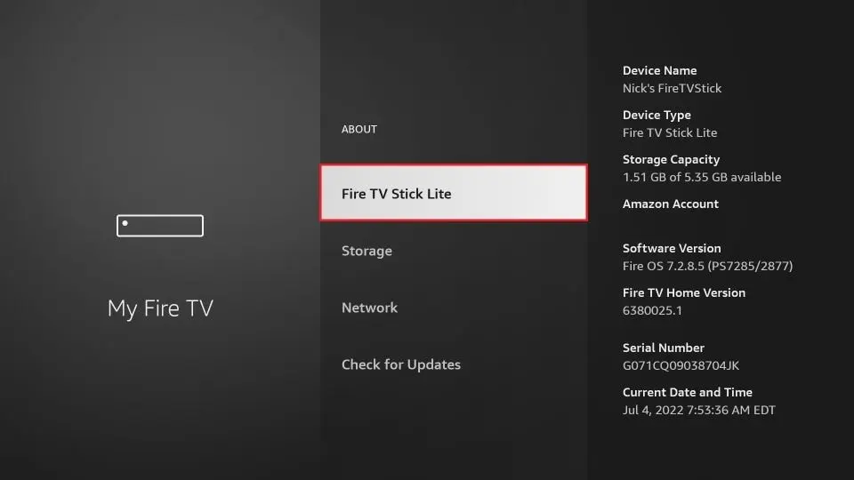
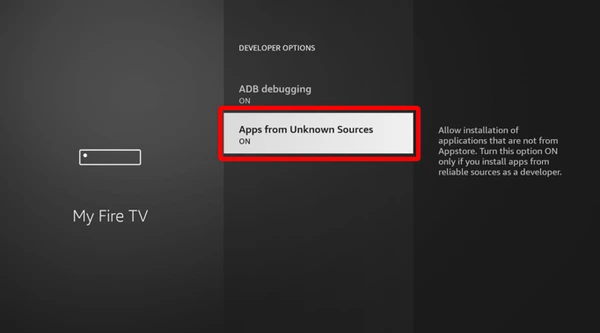
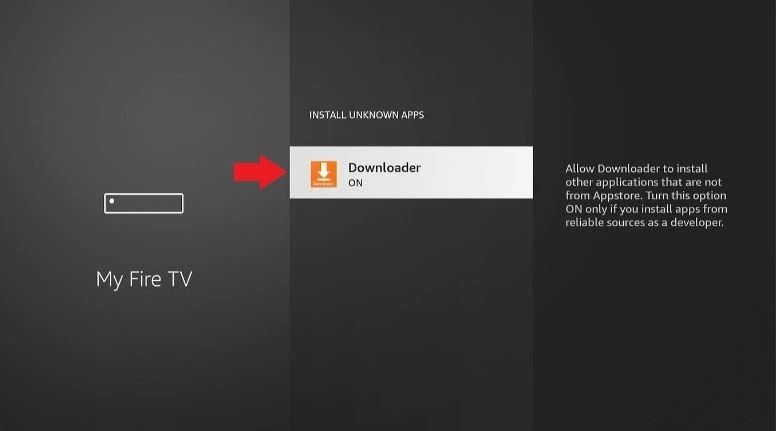

How to Install Downloader on Fire TV Stick
Downloader lets you sideload and install streaming apps on your Fire TV Stick. This guide walks you through installing the app, unlocking Developer Options, and allowing apps from unknown sources — so you can add the apps you want in about 10 minutes.

Install Downloader
Downloader allows Firestick users to download and install third-party apps, as the device doesn't allow downloads via the browser. The app is easy to install because it is available on the Amazon Store.
-
Open Search
On the Firestick main screen, go to Find, then click Search.

-
Type Downloader
Start typing Downloader, and you'll get a suggestion on the screen. Click it to search for the app.

-
Select the App
Downloader should now appear as the first suggestion. Click on it and download it.

Prep Your Firestick
By default, Firestick blocks the installation of third-party apps for security. You will need to tweak these settings before you can install your preferred IPTV players.
Allow "Apps from Unknown Sources"
Granting this permission will let you install apps you sideload via the Downloader app.
-
Go to Settings
From the Firestick home screen click My Fire TV.

-
Developer Options
Select Developer options.

-
If Developer Options Are Hidden
If Developer Options are hidden, click About to enable them. If you already have them, skip to step 7.

-
Unlock Developer Options
Click on your Fire TV Stick name 7 times to unlock Developer Options.

-
Confirmation Message
After clicking 7 times you will see the message "Developer Options Enabled".

-
Open Developer Options
Once Developer Options are enabled, select it from the menu.
-
Enable Installation
For older devices: click Apps from Unknown Sources to change the state from Off to On.

For Firestick Lite / Gen 3: click the option to see a list of apps. Click Downloader to turn the state to On.

🎉 Now, your device can install apps through Downloader. You're ready to sideload your favourite streaming apps.
Which Devices Work With Downloader?
The app is natively built to map perfectly with TV remote navigation layouts across major media players, so you can browse and install apps entirely from your remote.

Amazon Fire TV Family
Every iteration including the Amazon Fire TV Stick, Fire TV Stick 4K, Fire TV Stick 4K Max, and the Fire TV Cube.
Watch Video Guide
Google TV / Android TV Players
Popular retail units like the Google Chromecast with Google TV, Google TV Streamer, Nvidia Shield TV, Xiaomi Mi Box and other Android TV boxes.
Google Play StoreOn dedicated streaming devices, Downloader maps directly to the D-pad, Enter and Back buttons of your TV remote — no mouse or keyboard needed. It can also be downloaded from alternative sources like Uptodown for Android devices, in addition to the official app stores.
Downloader Guide FAQ
Common questions about installing Downloader and preparing your Fire TV Stick.
Fire Stick doesn't allow app downloads through its browser, so Downloader is the tool used to download and install third-party apps — including IPTV players.
Yes. Downloader is an official app on the Amazon Appstore, which makes it simple and safe to install directly from the Fire TV Stick search.
Go to Settings, then My Fire TV, then About. Click your Fire TV Stick name 7 times until you see the "Developer Options Enabled" message, then open Developer Options from the menu.
On Firestick Lite and 3rd Gen devices, "Install unknown apps" shows a list of apps instead of a single toggle. Select Downloader from that list and switch it to On.
Firestick Is Ready — Now What?
Your Fire TV Stick can now install third-party apps. Browse our other setup guides to install IPTV Smarters Pro or IBO Player Pro and log in with your USAView details.